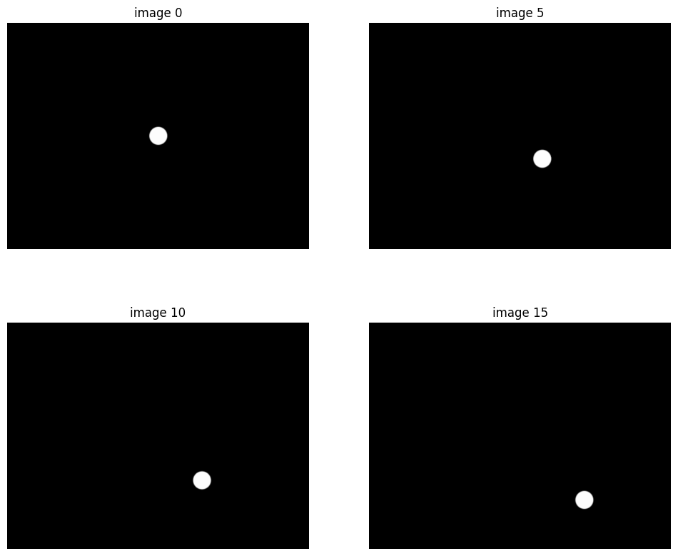

from UAV.imports import * # TODO why is this relative import on nbdev_export?
import cv2
import gi
import numpy as np
from imutils import resize
from PIL import Image
import time
# from dataloader import LoadImages, resize
from pathlib import Path
# import logging
# gi.require_version('Gst', '1.0')Gstreamer Python Documentation
Gstreamer python library Docs
from gstreamer import GstPipeline, GstContext, GstVidSrcValve, GstApp, Gst, GstVideo
import gstreamer.utils as gst_utils
from UAV.utils import *
from UAV.imports import * # TODO why is this relative import on nbdev_export?
import timeGstVidSrcValve
GstVidSrcValve (command:str, leaky:bool=False, max_buffers_size:int=100, loglevel:gstreamer.gst_tools.LogLevels=20)
GstVideoSourceValve is a wrapper around a GStreamer pipeline that provides get and set methods for valve states.
| Type | Default | Details | |
|---|---|---|---|
| command | str | Gst_launch string | |
| leaky | bool | False | If True -> use LeakyQueue |
| max_buffers_size | int | 100 | Max queue size |
| loglevel | LogLevels | 20 |
Setup the pipeline commands
The valve is used to pause the video, this way we can multiplex the video stream so to conserve bandwidth
GstVidSrcValve.set_valve_state
GstVidSrcValve.set_valve_state (valve_name:str, dropstate:bool)
Set the state of a valve in the pipeline
| Type | Details | |
|---|---|---|
| valve_name | str | Name of the valve in the pipeline |
| dropstate | bool | True = drop, False = pass |
The valve is used to pause the video, this way we can multiplex the video stream so to conserve bandwidth
GstVidSrcValve.get_valve_state
GstVidSrcValve.get_valve_state (valve_name:str)
Get the state of a valve in the pipeline
| Type | Details | |
|---|---|---|
| valve_name | str | Name of the valve in the pipeline |
DEFAULT_PIPELINE = gst_utils.to_gst_string([
'videotestsrc pattern=ball is-live=true num-buffers=1000 ! tee name=t',
't.',
'queue leaky=2 ! valve name=myvalve drop=False ! video/x-raw,format=I420,width=640,height=480',
'videoconvert',
# 'x264enc tune=zerolatency noise-reduction=10000 bitrate=2048 speed-preset=superfast',
'x264enc tune=zerolatency',
'rtph264pay ! udpsink host=127.0.0.1 port=5000',
't.',
'queue leaky=2 ! videoconvert ! videorate drop-only=true ! video/x-raw,framerate=5/1,format=(string)BGR',
'videoconvert ! appsink name=mysink emit-signals=true sync=false async=false max-buffers=2 drop=true ',
])command = DEFAULT_PIPELINE
width, height, num_buffers = 1920, 1080, 40
with GstVidSrcValve(command, leaky=True) as pipeline:
buffers = []
count = 0
dropstate = False
while len(buffers) < num_buffers:
time.sleep(0.1)
count += 1
if count % 10 == 0:
dropstate = not dropstate
pipeline.set_valve_state("myvalve", dropstate)
print(f' {dropstate = }, {count = }')
buffer = pipeline.pop()
if buffer:
buffers.append(buffer)
# if len(buffers) % 10 == 0:
# print(f'Got: {len(buffers)} buffers of {pipeline.queue_size}')
print('Got: {} buffers'.format(len(buffers)))
_,axs = plt.subplots(2,2,figsize=(12,10))
for i,ax in enumerate(axs.flatten()): show_image(buffers[i*5].data, ax=ax, title=f'image {i*5}') dropstate = True, count = 10
dropstate = False, count = 20
dropstate = True, count = 30
dropstate = False, count = 40
Got: 40 buffers
Show the video on screen using two pipelines
SRC_PIPELINE = gst_utils.to_gst_string([
'videotestsrc pattern=ball is-live=true num-buffers=1000 ! video/x-raw,framerate=5/1 ! tee name=t',
't.',
'queue leaky=2 ! valve name=myvalve drop=False ! video/x-raw,format=I420,width=640,height=480',
# 'textoverlay text="Frame: " valignment=top halignment=left shaded-background=true',
# 'timeoverlay valignment=top halignment=right shaded-background=true',
'videoconvert',
# 'x264enc tune=zerolatency noise-reduction=10000 bitrate=2048 speed-preset=superfast',
'x264enc tune=zerolatency',
'rtph264pay ! udpsink host=127.0.0.1 port=5000',
't.',
'queue leaky=2 ! videoconvert ! videorate drop-only=true ! video/x-raw,framerate=5/1,format=(string)BGR',
'videoconvert ! appsink name=mysink emit-signals=true sync=false async=false max-buffers=2 drop=true ',
])
print(SRC_PIPELINE)
SINK_PIPELINE = gst_utils.to_gst_string([
'udpsrc port=5000 ! application/x-rtp, media=(string)video, clock-rate=(int)90000, encoding-name=(string)H264, payload=(int)96',
'rtph264depay ! avdec_h264',
'fpsdisplaysink',
# 'autovideosink',
])videotestsrc pattern=ball is-live=true num-buffers=1000 ! video/x-raw,framerate=5/1 ! tee name=t t. ! queue leaky=2 ! valve name=myvalve drop=False ! video/x-raw,format=I420,width=640,height=480 ! videoconvert ! x264enc tune=zerolatency ! rtph264pay ! udpsink host=127.0.0.1 port=5000 t. ! queue leaky=2 ! videoconvert ! videorate drop-only=true ! video/x-raw,framerate=5/1,format=(string)BGR ! videoconvert ! appsink name=mysink emit-signals=true sync=false async=false max-buffers=2 drop=true num_buffers = 40
with GstPipeline(SINK_PIPELINE) as rcv_pipeline:
with GstVidSrcValve(SRC_PIPELINE, leaky=True) as pipeline:
buffers = []
count = 0
dropstate = False
while len(buffers) < num_buffers:
time.sleep(0.1)
count += 1
if count % 10 == 0:
print(f'Count = : {count}')
dropstate = not dropstate
pipeline.set_valve_state("myvalve", dropstate)
buffer = pipeline.pop()
if buffer:
buffers.append(buffer)
if len(buffers) % 10 == 0:
print(f'Got: {len(buffers)} buffers of {pipeline.queue_size}')
print('Got: {} buffers'.format(len(buffers)))Count = : 10
Got: 10 buffers of 0
Count = : 20
Got: 20 buffers of 0
Count = : 30
Got: 30 buffers of 0
Count = : 40
Got: 40 buffers of 0
Got: 40 buffers# assert False, 'stop here'